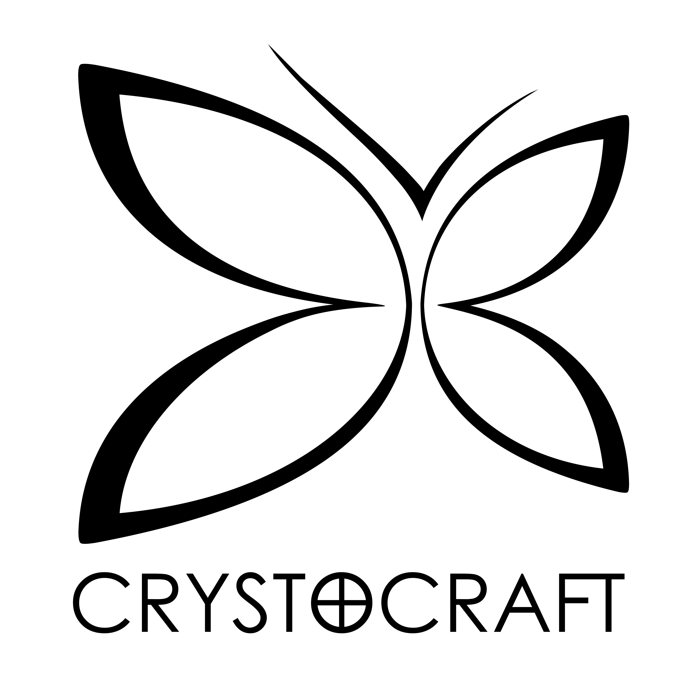
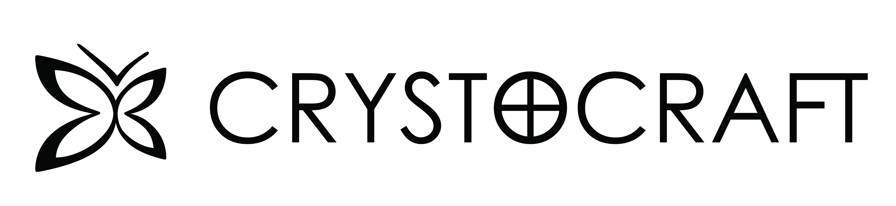

Option 1 — Graphic emphasis
Large format: packaging, product base plate, signage

Standard · with ®
Standard · no ®

Reversed · 70% black
Option 2 — Small logo, under 1 cm
Letterhead, invoice, Tmall, website header, email signature

Horizontal · with ®
Horizontal · no ®
Mark only
Option 4 — Micro, under 5 mm
Small laser logo, small die press — mark detail not visible at this scale
Wordmark only
Mark only
At <5 mm the ® and butterfly detail are suppressed — outline mark or wordmark only